Кодирование Хаффмана
Теория, примеры и иллюстрации по теме.
Материалы и примеры по пунктам
Методы сжатия архиваторов. Хаффман
Одним из алгоритмов сжатия
является метод Хаффмана, или, как
его еще называют — энтропийное
кодирование.
Основой энтропийного
кодирования является сопоставление
чаще встречаемому более короткий
код.
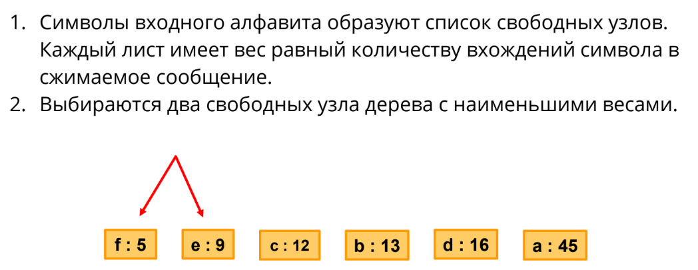
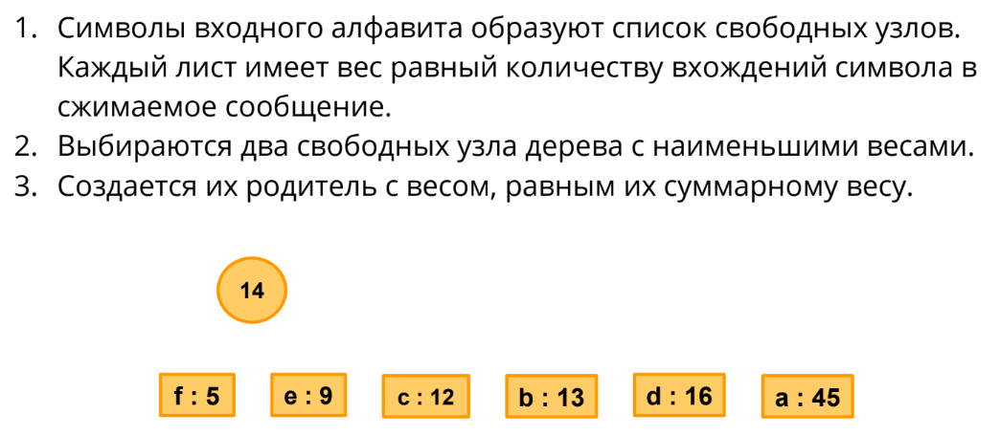
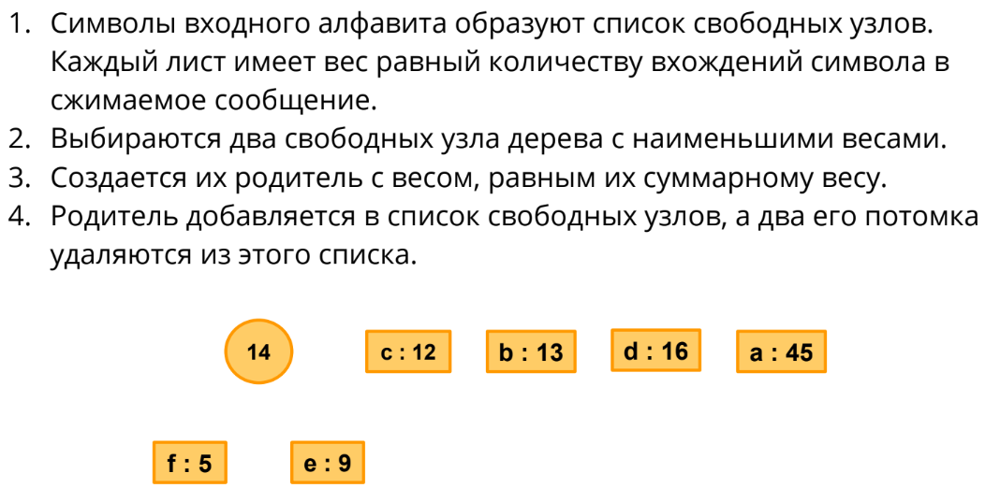
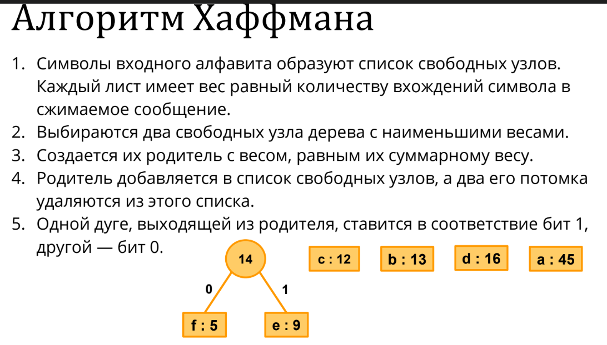
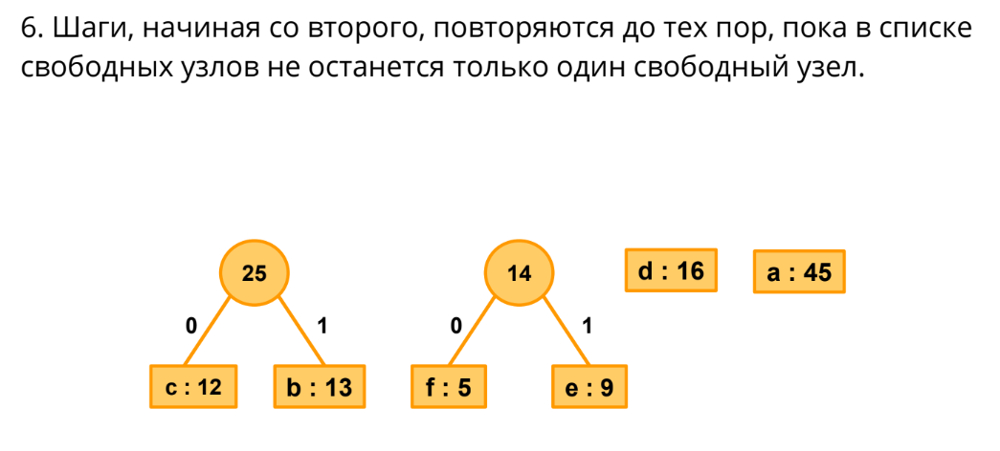
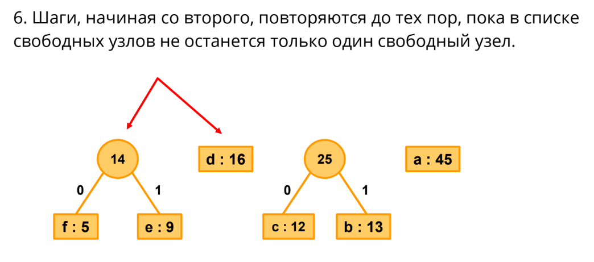
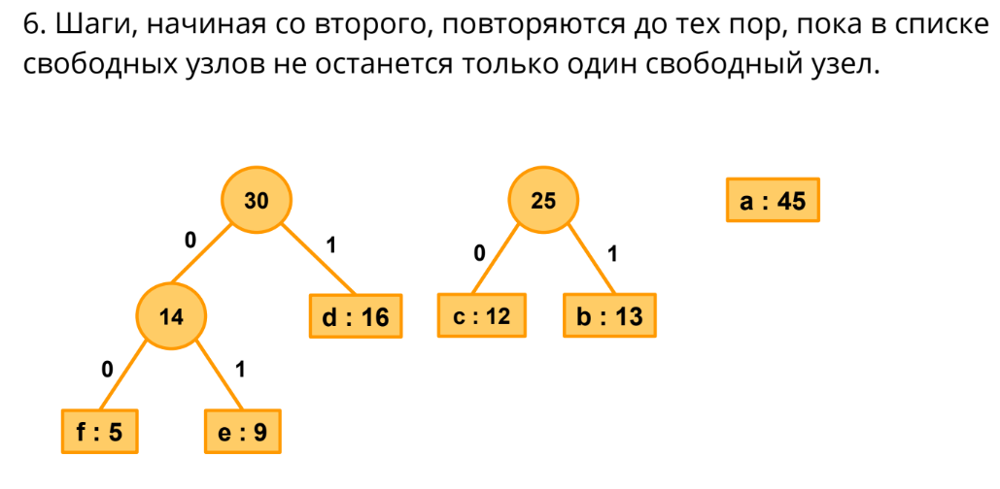
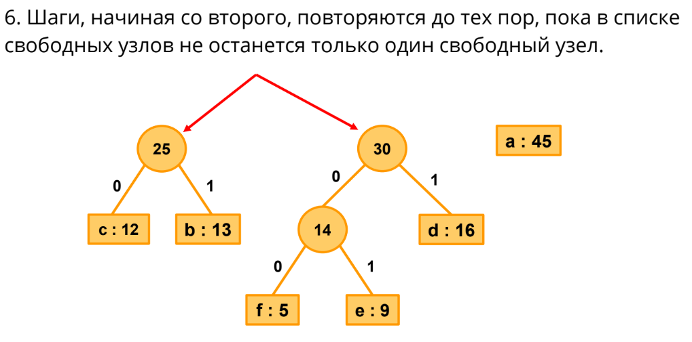
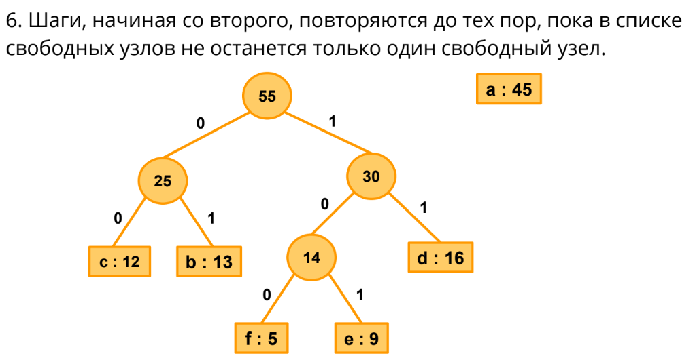
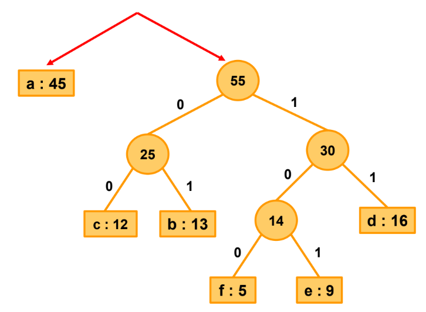
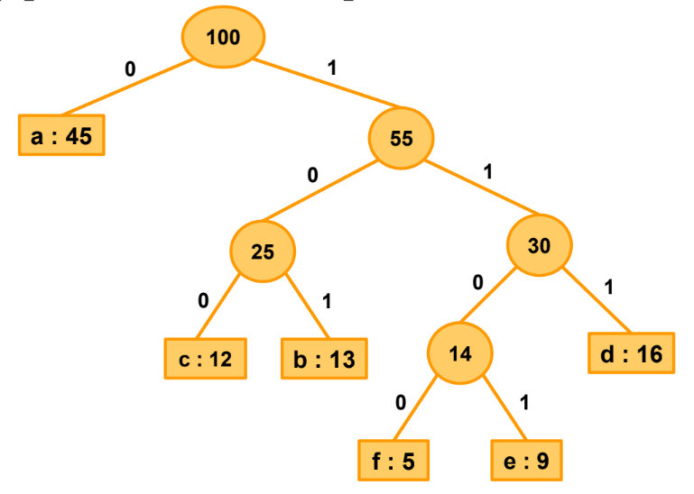
Тогда избыточностью
кодирования схемой Σ называется величина:
lср = lср(Σ) = l1
-
p1 + ... + lr
-
pr
Схемы и рукописные примеры
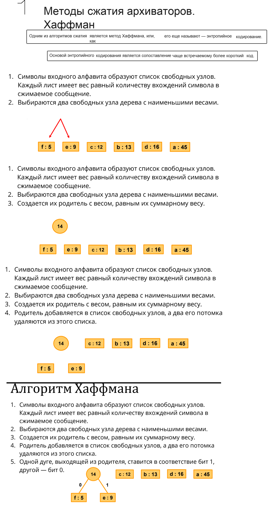
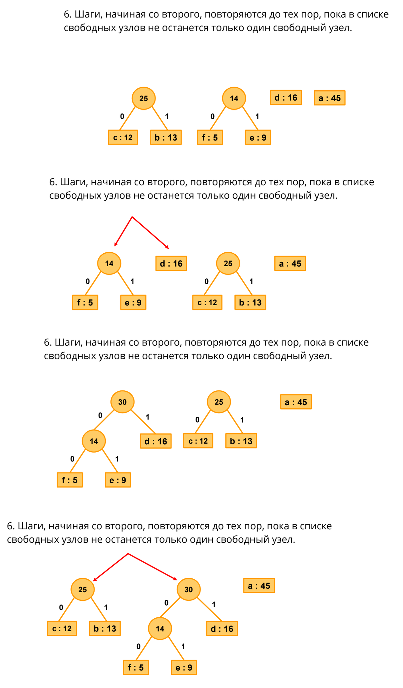
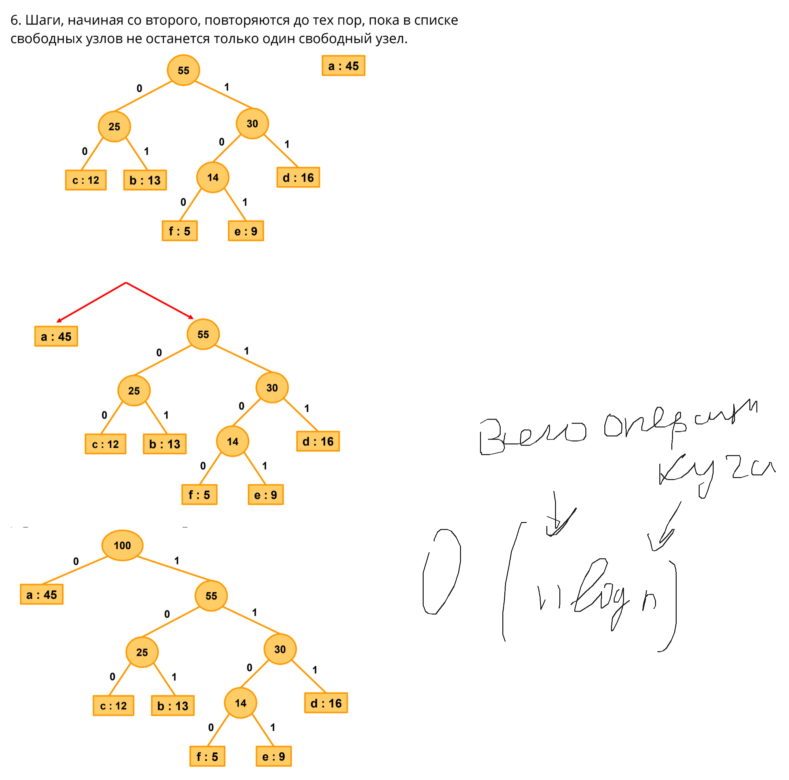
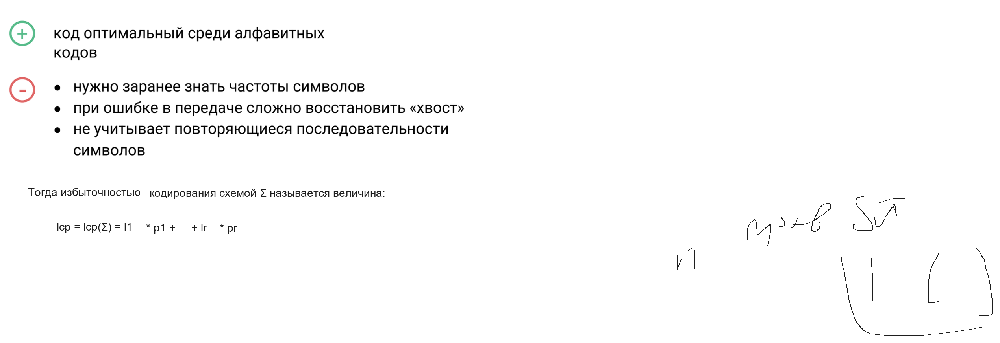